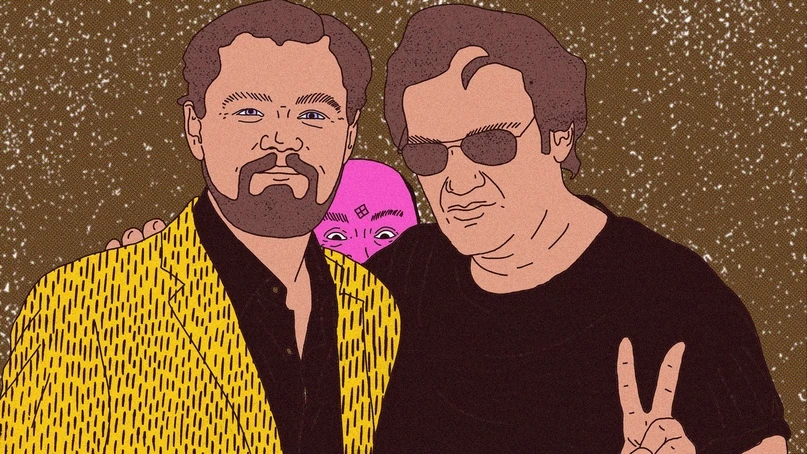
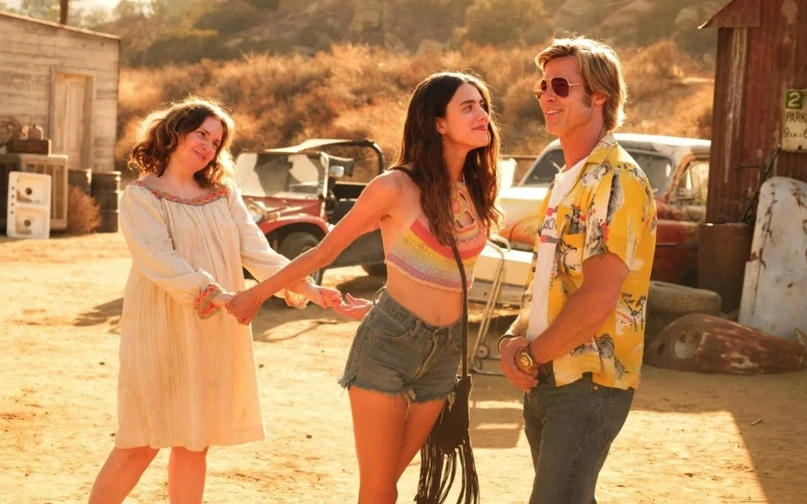

Данила Блюз посмотрел «Однажды в Голливуде» и увидел там не только шикарную актерскую игру и доскональный портрет фабрики грез конца 60-х, но и покушение на один из главных столпов американской культуры — хиппи.
В кинотеатрах вовсю крутят новый, девятый фильм Квентина Тарантино «Однажды в... Голливуде». Вы уже наверняка начитались рецензий о небывалом количестве отсылок к поп-культуре, об уходящих в прошлое настоящих киногероях и о том, что главным действующим лицом является Голливуд и дух переломного для американской культуры 1969 года. Наверняка вы также слышали, что отдельные особо продвинутые западные критики разнесли фильм за отсутствие негров, за нарочитую маскулинность, за то, что у героини Марго Робби почти нет текста в фильме и за то, что Брюс Ли показан тщеславным болтуном. Но особенно западных критиков возмутило то, как Тарантино размазал один из главных американских культурных идолов — хиппи.

Хиппи — это праотцы нынешних леворадикалов, всех этих феминисток, антифа и прочих. Революция и свободная любовь плюс психоделика, восточная философия, нью-эйдж, пассивный анархизм, пацифизм и рок-н-ролл. Позднее выходцы из движения состригут патлы, отмоются, заполнят университетские кампусы, а после пойдут в политику. При одном упоминании 60-х в памяти у большинства сразу же всплывают обкуренные длинноволосые андрогины, показывающие пальцами V (кстати, это означало не Victory, как у Черчилля, а Vietnam — в знак протеста против войны во Вьетнаме). В массовой культуре хиппи, как правило, изображаются безобидными позитивными ребятами и девчатами, которые, однако, чуть ли не перевернули мир своим Вудстоком и «Летом любви». Они преподносятся провозвестниками нового мира — в противоположность угрюмому консервативному обществу, где царят сплошь мещане, куклуксклановцы да милитаристы. Складывается впечатление, что только хиппи участвовали в борьбе за гражданские права и окружающую среду, выступали за свободу слова, сражались с сегрегацией и войной во Вьетнаме. Черт побери, да мы бы жили в концлагере сейчас, если бы не хиппи и их протесты против всего на свете!
Но вернемся в мир фильма «Однажды... в Голливуде». Да, Голливуд 1969 года в этой ленте — главное действующее лицо. Он яркий, пестрый, люди в нем танцуют, пьют, дерутся, кто-то просирает свою жизнь и карьеру, кто-то, наоборот, стремительно становится популярным — это бурление показывают нам добрых два часа. Но над всем и вся витает мрачный призрак грядущего страшного преступления. Фильм создавался с учетом того, что зритель знает исторический бэкграунд — знает про то, что члены «Семьи» Мэнсона 8 августа ворвутся в дом Романа Полански и зверски убьют Шэрон Тейт — его жену, находящуюся на девятом месяце беременности, — и еще троих гостей. Тарантино в каком-то интервью сказал, что после убийства Тейт старый Голливуд умер — в него ворвалось настоящее насилие.
И вот члены «Семьи», эти хиппи-детишки, как вши, ползают по блестящему лакированному миру Голливуда, роются в мусорках, торгуют кислотой, орут на полицейских и готовы отсосать у первого встречного. У них немытые волосы, небритые подмышки и грязные ноги (уж не знаю, плюс это или минус для Тарантино, известного фут-фетишиста).

Примечательно, что хиппари живут на заброшенном ранчо, где раньше снимали вестерны (в реальности, кстати, так и было) — то есть как бы существуют в декорациях Голливуда. Они, как паразиты, проникли в его плоть, чтобы уничтожить изнутри.
Не будет спойлером, если я перескажу один эпизод из фильма. Герой Брэда Питта, каскадер и ветеран войны, приезжает на ранчо Спэн, где он когда-то снимался, и перед нами предстают те самые хиппи. Они, как дети кукурузы, вылезают из мрачных заброшенных лачуг — босоногие, немытые, злые — и постепенно собираются в грозную толпу и следуют за Клиффом, который во что бы то ни стало решил проверить старого друга — владельца ранчо, старого Джорджа. В доме Джорджа тоже все мрачно: летают мухи, по углам — горы мусора, раковина завалена плесневелой посудой, в лучах света, пробивающихся из-за задернутых штор, витает пыль. Коммуна хиппи показана жутким притоном чумазых беспризорников. И этот вот сброд — угроза для фабрики грез. Когда же Клифф выходит из дома, он проходит через толпу кричащих и плюющихся в него девок, вдобавок — обнаруживает ножик в колесе машины. Позже эти же девчушки вырастут, соберут Mee Too и окончательно добьют Голливуд.
Можно, конечно, сказать, что «Семья» Мэнсона — секта, собиравшая бездомных подростков, что они не тру-хиппи. Но Тарантино устами Рика Далтона, стоящего в халате с графином ледяной маргариты, проводит между ними знак равенства.
Да, «Семья» Мэнсона убила Шэрон Тейт, ну а остальные хиппи позже убьют вестерны своим нытьем о правах индейцев, убьют боевики нытьем о пропаганде насилия, начнут пихать в каждый фильм негров, геев и прочие угнетенные меньшинства, за права которых они выступали. И превратят любимое Квентином кино в жалкое посмешище.

Когда-то Тарантино разделался с нацистами в своих «Бесславных ублюдках», теперь он уничтожает хиппи.
Не стану спорить, если кто-то скажет, что я вижу в фильме то, чего автор туда совсем не вкладывал. Но раз уж я это выудил, значит, оно там есть. Тарантино на то и Тарантино: его любят все и каждый тащит Квентина в свой лагерь. Мединский — в Кремль, к шапке Мономаха, либералы — на марш против Трампа. А Тарантино пофигу, он просто снимает клевое кино, которое можно смотреть и без всякой идеологии, просто наслаждаясь тем, как нацисты горят или собака отгрызает член преступнику.